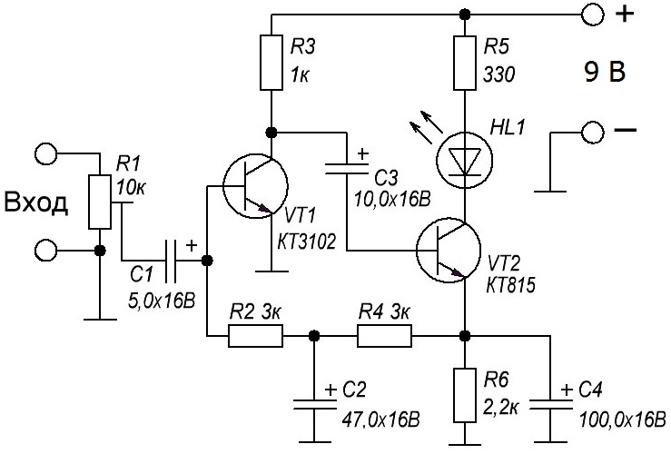

Мини-светомузыка

Рис. 1 - Схема мини-светомузыки
При своей простоте схема имеет несколько плюсов:
- полная не зависимость от громкости;
- при отсутствии сигнала светодиод на выходе будет светится,
- минимальное потребление тока;
- минимальные размеры, что позволяет данное устройство установить в небольшой коробок, вместе с элементом питания;
- схема работает от любого линейного выхода, как от карманного MP3-плеера так и от компьютера, и не требует дополнительных усилителей;
- схема не критична к номиналам деталей, и работает сразу при включении.